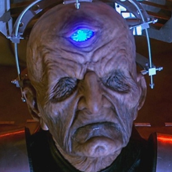

| Home | The Doctors | The Companions | The Villains |
|
|||
| cf
DavrosDavros was Chief Scientist of the Kaleds towards the end of their thousand year war with the Thals on the planet Skaro. Confined to a mobile life-support system, Davros developed a final solution to end the war: The Daleks – mutated Kaleds robbed or morality and with added aggression, placed inside armoured shells called the Mark III Travel Machines. However, his own people rejected the notion, and in retaliation he gave the Thals the formula to destroy the Kaled dome. Safe in the bunker below, Davros released the Daleks on an unsuspecting world. However, the Daleks turned upon their creator, and left him for dead in the bowels of the city on Skaro. Years later, the Daleks sought his help to defeat their logical stalemate with the Morvellans and then again to defeat the Morvellan virus. Later he became The Great Healer, turning the bodies of the dead into food, or new “Imperial” Daleks. His grip on the Daleks weakened, as a renegade faction grew up – loyal to the Supreme Dalek - plunging them into civil war. He commanded Dalek forces during The Last Great Time War, and was seen flying into the jaws of the Nightmare Child. Rescued by Dalek Caan, Davros constructed the Reality Bomb, but was foiled by the Children of Time. He was last seen cursing the Doctor as “The Destroyer of Worlds” as the Crucible burned around him. |